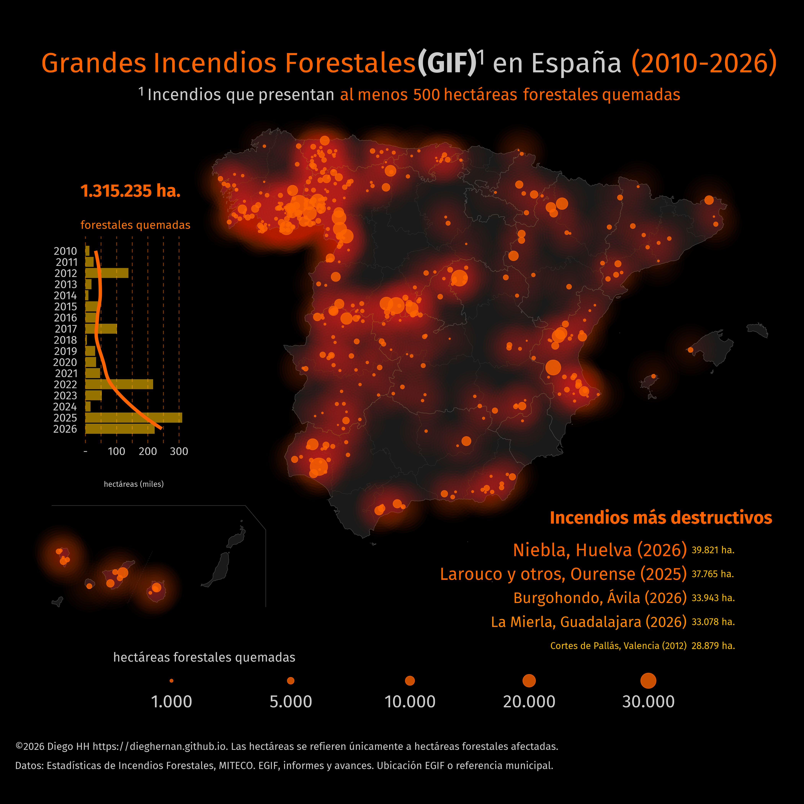

Este proyecto reúne datos estructurados de grandes incendios forestales (GIF) en España, con al menos 500 hectáreas forestales quemadas, y el código en R de la infografía.
La versión en desarrollo ofrece 329 partes EGIF de 2010–2023 y una vista conciliada de 455 registros de incendios de 2010–2026. Los dos archivos describen datos relacionados: no deben sumarse ni contarse sus filas como si tuvieran la misma unidad. Hay 9 registros anteriores y 8 partes seleccionados cuya correspondencia sigue pendiente. Otros dos registros se conservan con el avance oficial porque su provincia no tiene partes en la exportación EGIF de 2023.
EGIF tiene prioridad cuando existe una correspondencia documentada. Los registros sin correspondencia conservan su informe o avance de origen. Las exportaciones no prueban cobertura anual completa; en 2023 no hay registros de siete provincias. No es un servicio de seguimiento en tiempo real.

Partes EGIF
Partes de grandes incendios forestales de 2010–2023, con identificadores, superficies, causa, procedencia y coordenadas. Un incendio puede tener varios partes.
329 registros · 202 puntos · EPSG:4326
Incendios
Vista conciliada de incendios de 2010–2026. Utiliza EGIF cuando existe una correspondencia documentada y conserva informes y avances de respaldo, con notas y estado de conciliación.
455 registros · 455 puntos · EPSG:4326
Los GeoJSON conservan la ubicación real de Canarias. Los registros sin coordenadas interpretables tienen geometría nula. La vista de incendios identifica las ubicaciones municipales de respaldo.
Los dos conjuntos están relacionados: no sumar sus filas ni sus superficies. Las correspondencias pendientes y la cobertura incompleta de EGIF están documentadas.
Versión en desarrollo . Descargas EGIF: 03/11/2026. El DOI de la versión archivada 1.0.0 corresponde a los datos anteriores a esta migración.
El producto principal, rdata/egif_parts.csv, contiene una fila por parte,
con egif_part_id, fire_id cuando está asignado, datos de origen,
superficies, causa, procedencia, notas y coordenadas. La vista
rdata/gif_d2010.csv conserva una fila por incendio registrado y sirve para
la infografía. Los identificadores y códigos deben leerse como texto. Ambos productos
se ofrecen también en JSON con tipos explícitos y valores nulos para datos
ausentes.
Ambos productos están disponibles en GeoJSON, con puntos en EPSG:4326 y las mismas propiedades. Canarias conserva su ubicación real. Los registros sin coordenadas interpretables permanecen con geometría nula.
Las columnas longitude y latitude utilizan EPSG:4326, sin desplazar
Canarias. location_method distingue las coordenadas EGIF de las capitales
municipales utilizadas como referencia. En partes sin datum conocido o sin
coordenadas, las coordenadas geográficas permanecen vacías. Los códigos
declarados y el municipio obtenido mediante cruce espacial se conservan
por separado; no se corrigen automáticamente.
Los incendios con varios partes comparten fire_id. El umbral de 500 ha
se aplica a su suma después de las agrupaciones explícitas. Los partes
sin correspondencia permanecen sin fire_id y no se añaden automáticamente
a la vista de incendios, para evitar dobles recuentos.
Fuentes y tratamiento
Los datos proceden de la Estadística General de Incendios Forestales (EGIF) del MITECO y de sus informes y avances. Los ZIP originales, descargados el 03/11/2026, se conservan con sus huellas SHA-256. Los informes y avances de la base anterior se mantienen como fuentes de respaldo identificadas por registro.
Origen de los datos: MITECO. Recopilación y adaptación: Diego HH. Los datos se reutilizan conforme al aviso legal del MITECO. La licencia MIT corresponde al código y la documentación. El proyecto es independiente y no implica respaldo del Ministerio. La cartografía municipal y las capitales municipales proceden de IGN mediante SIANE y mapSpain. Obra derivada de CartoBase ANE 2006-2024 CC-BY 4.0 ign.es.
La metodología y la guía de datos
describen la prioridad de fuentes, las agrupaciones y las limitaciones.
El archivo Excel anterior queda archivado en data-raw/legacy/; ya no
es el origen del proceso. Los CSV se regeneran con
py scripts/build_dataset.py y la infografía lee directamente su vista de
incendios. Véase incendios.R.
Los puntos del mapa utilizan las coordenadas EGIF interpretables y una capital municipal cuando no están disponibles. Son ubicaciones de referencia, no perímetros. En incendios con varios partes, la vista de incendios identifica el parte del que toma el punto de referencia.
La versión en desarrollo todavía no tiene DOI propio. La cita siguiente corresponde a la versión archivada 1.0.0, anterior a esta migración.
Cómo citar
Hernangómez, D. (2026). Grandes incendios forestales en España (Version 2.0.0) [Data set]. https://doi.org/10.5281/zenodo.23932940
Referencia en BibTeX
@misc{hernangomez_grandes_incendios,
author = {Hernangómez, Diego},
title = {Grandes incendios forestales en España},
year = {2026},
version = {2.0.0},
doi = {10.5281/zenodo.23932940},
url = {https://doi.org/10.5281/zenodo.23932940},
note = {Data set}
}
El DOI general reúne las versiones del proyecto. Para identificar los datos utilizados en un análisis, cite el DOI de la versión correspondiente.
Referencias
Royé, Dominic. 2021. “Firefly Cartography.” June 1. https://dominicroye.github.io/blog/firefly-maps/.